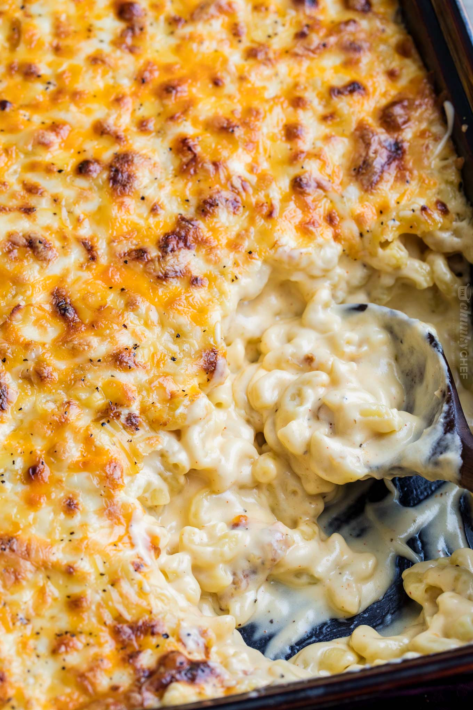

Skip to Main Content
Zucchini Fritters

How to make zucchini fritters
- Prepare the zucchini: Grate zucchini on a box grater or in your food processor, transfer to a large mixing bowl and toss it with a teaspoon of salt.
- Drain: After 10 minutes, squeeze the zucchini over the sink or through a cheesecloth to release the excess liquid. Youll need to measure 3 1/2 to 4 cups of zucchini once its drained.
- Add egg and green onion: Stir the green onions and eggs into the bowl
- Finish the batter: Whisk together the dry ingredients in a small bowl and stir into the zucchini.
- Cook the fritter: Warm 2 tablespoons of olive oil in a skillet set over medium heat. Add a heaping tablespoon of batter to the hot pan for each zucchini fritter. Flatten slightly, then cook for 3 to 5 minutes per side, or until golden brown and crispy, reducing the heat if needed.
- Serve: Plate the fritters and serve them warm with a dollop of sour cream.
Pancakes
How to make Pancakes
- First we will combine our dry ingredients in a bowl. (Flour, baking powder, salt, sugar) Now let's mix them together using a whisk, or you can sift them together with a sifter if you like.
- Now in a large bowl add your two eggs and beat them with a whisk or fork.
- Next we will add our milk and our melted butter, stirring in between each one, so it is all nice and mixed together.
- Finish the batter: Whisk together the dry ingredients in a small bowl and stir into the zucchini.
- Now we just add our flour mixture a little bit at a time, I usually do about a 3rd of it, thin mix with the whisk, then a third, etc. This method helps keep the lumps from forming in the batter.
- Now we cook our pancakes. It helps to have a nice hot skillet. So put your skilled on the stove top and set the temperature in between medium and medium high. Then spray the skillet with kitchen spray.
- When you have a nice brown color, flip the pancake over to the other side. This side will take less time to cook. Again, check it after 20 seconds or so. Now you are done! Awesome thick fluffy pancakes.

How to make Mac and Cheese
- Boil the pasta, drain.
- Make the cheese sauce by combining a fat (butter), and starch (flour), then whisking in the milk products.
- Cook the sauce until its nice and thick.
- Add in shredded cheeses, stir well.
- Combine cheese sauce with cooked pasta.
- Transfer half of the mac and cheese to a baking dish, sprinkle with more shredded cheese.
- Top with the rest of the mac and cheese, top with more shredded cheese.
- Bake and prepare to thoroughly enjoy!
